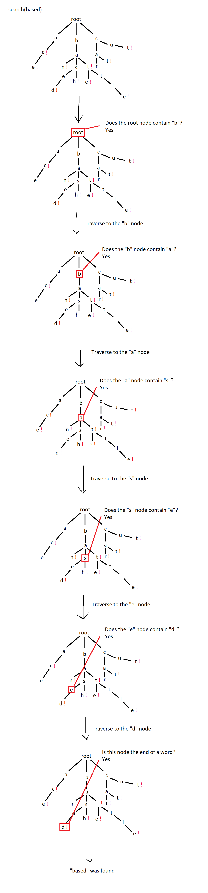

Autocomplete Demo
{{option}}
What is it?
This is a demo of an implementation of autocomplete. It was made to efficiently search very large data sets of
strings. It takes a text input and returns a specified number of words containing that input. The data set used
for searching can be found at https://www.mit.edu/~ecprice/wordlist.10000.
How it Works
It uses an implementation of the trie data structure to facilitate efficient searching of a very large number
of strings. A trie is a type of tree where each node is a key of some kind. In this case, each node is a single
character. Each letter of a word exists as a chain of nodes in the tree (e.g. “cat” would have “c” as the child of
the root node, “a” as the child of “c” and “t” as the child of “a”). The end of a word is signified with a boolean
flag.
Each node is essentially just an array with a length corresponding to however many characters exist in the search
space (in my case, 26) and the end flag. When a child is added to a node, it is added to its corresponding index in
the parent’s array (the index can be determined by a lookup table or using ascii codes). Because of this automatic
sorting and the tree structure, traversal of the trie is extremely efficient, making insertion and searching extremely
efficient.

From here, autocomplete just requires traversal up to a certain point in the trie, then a depth-first search on the
last node of that traversal. In my implementation, you are able to specify a maximum number of suggestions, which can
stop the search after a point, further increasing efficiency.
Function Examples
Insert example:

Search success example:

Full autocomplete example: